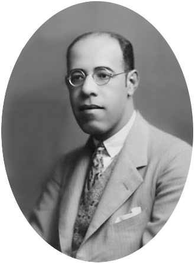

Mário de Andrade

Mário de Andrade.
Fonte: Wikipédia.
Trajetória e Impacto
Mário Raul de Morais Andrade (1893-1945) foi um dos maiores expoentes da cultura brasileira no século XX. Atuou como escritor, musicólogo, fotógrafo e gestor cultural, sendo figura central da Semana de Arte Moderna de 1922. Sua obra-prima, Macunaíma (1928), buscou redefinir a identidade nacional ao valorizar a pluralidade étnica e o modo de falar do nosso povo.
🎧 Podcast: O Turista Aprendiz e a Alma Brasileira
Duração estimada: 8 minutos.
Explorar Legado
🧭Turista Aprendiz
Viajou pelo Amazonas e Nordeste colhendo a base etnográfica para a criação de Macunaíma.
🏛️Gestor Cultural
Diretor do Departamento de Cultura de SP, foi pioneiro na preservação do patrimônio e na democratização da arte.
🎨Semana de 22
Idealizador e pilar teórico da Semana de Arte Moderna, liderou o "Grupo dos Cinco" na renovação das artes.
🗣️A Fala Impura
Inovou ao elevar o português falado e os regionalismos ao status de linguagem literária.
📚Obra Vasta
Publicou poesias, ensaios e contos, buscando sempre "realizar o Brasil" em sua totalidade social.
🏠Casa-Museu
Sua casa na Barra Funda (SP) virou um museu! Lá você conhece o lugar onde ele viveu e criou suas maiores obras.